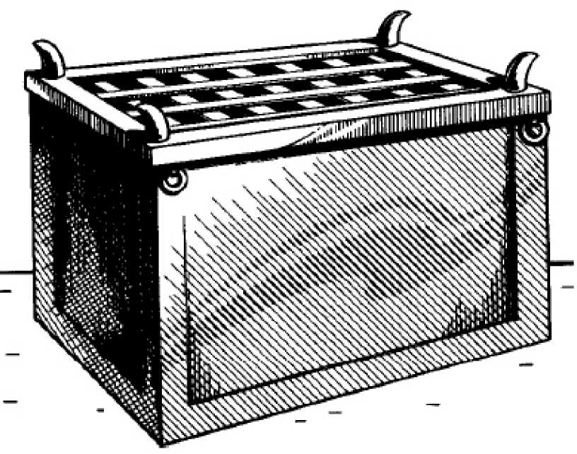
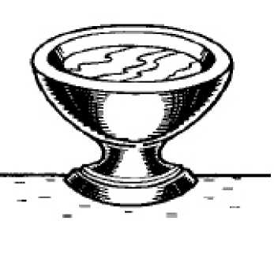
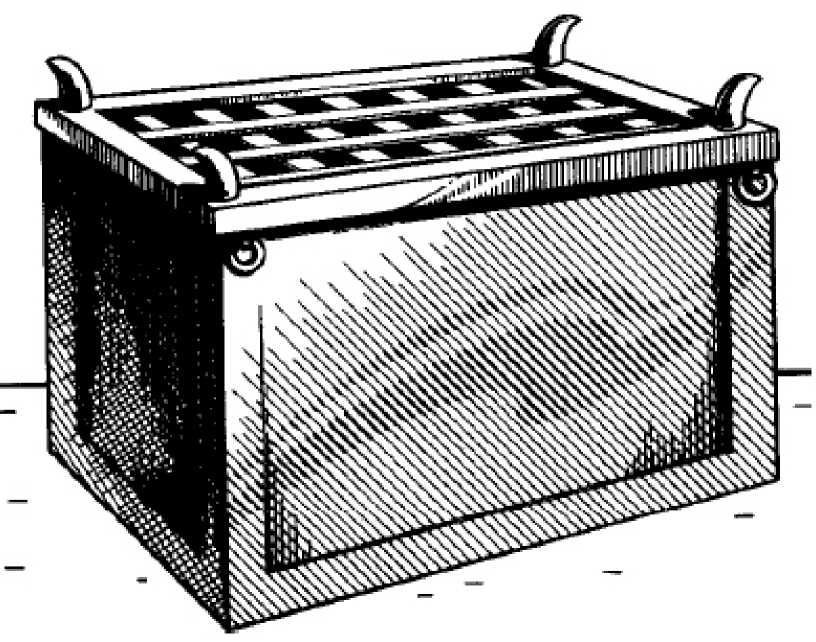
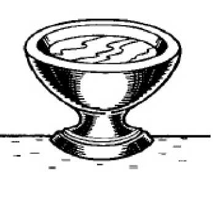
 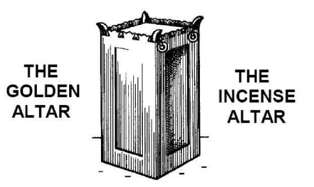
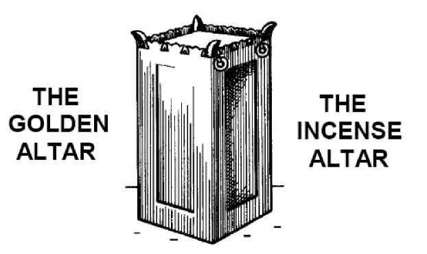


 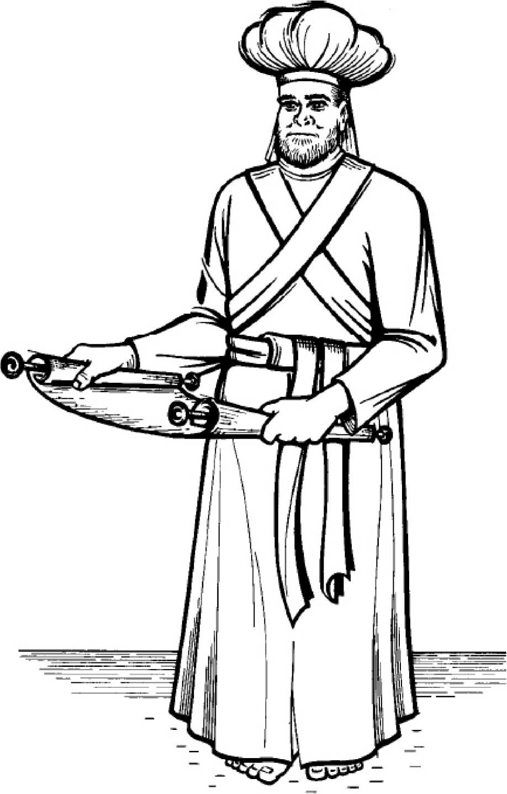
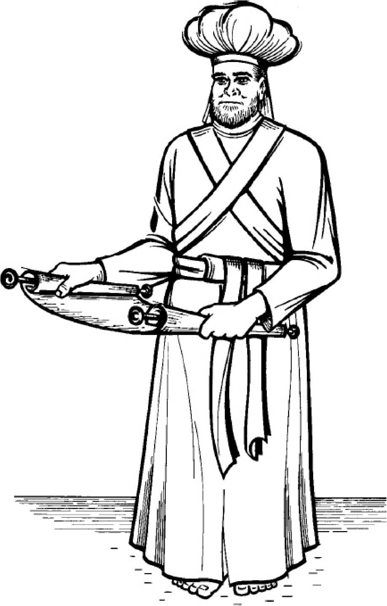

 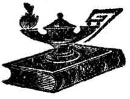
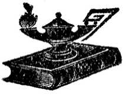
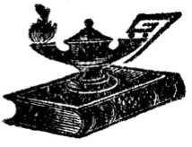
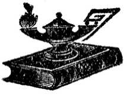

 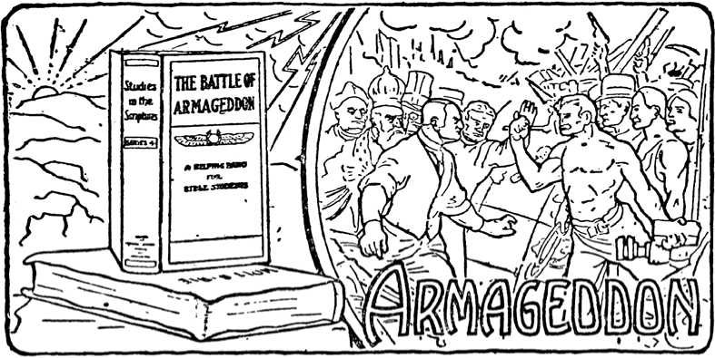
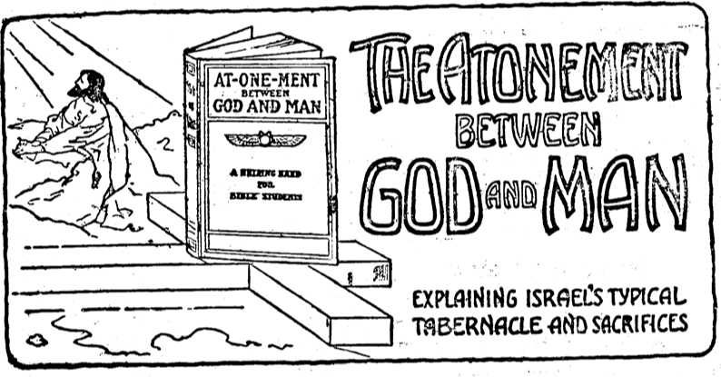
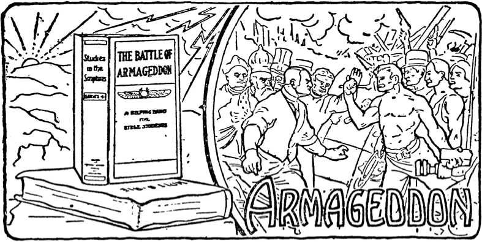
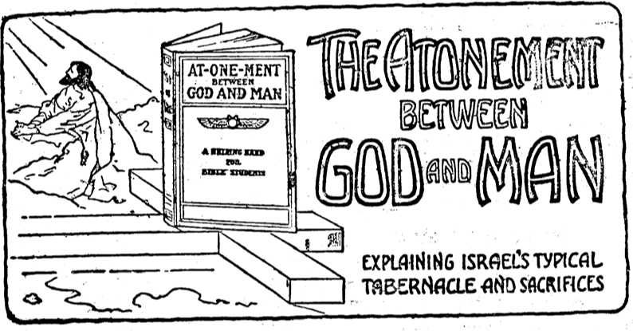


(In English, German, Swedish, Finnish and Dano-Norwegian.)
368 PAGES— cloth bound. 50 cents, postpaid or delivered by colporteurs. magazin edition (eng. and ger.) 10 cents postpaid.
International Bible Students Association
Brooklyn, N. Y.
Volume III. “Studies in the Scriptures” Series
THINGS YOU OUGHT TO KNOW AS
CHRISTIAN BIBLE STUDENTS
DO YOU KNOW THAT
We are now living in “the Time of the End” of this Gospel Age?
Our Epoch Is “the Day of God's Preparation” for the Millennial Age?
The “Days of Waiting” are ended and the “Cleansing of the Sanctuary”—the Church— the separating of its Wheat and Tares, is now in progress?
This is the reason for the beginning of the Return of Divine Favor to Fleshly Israel— blinded for centuries —to permit the gathering of an Elect Class from among the Gentiles?
This favor now taking shape is known as Zionism? Immanuel’s Kingdom is now being established?
The Great Pyramid in Egypt is a Witness to all these events of the past and present— testifying In symbols? The Pyramid's Downward Passage under “A Draconis” symbolizes the course of Sin? Its First Ascending Passage symbolizes the Jewish Age? Its Grand Gallery symbolizes the Gospel Age? Its Upper Step symbolizes the approaching period of tribulation and anarchy, “Judgments,” upon Christendom? Its King's Chamber the Divine Nature, eta, of the Overcoming Church—the Christ, Head and Body? Its AnteChamber the Correction in Righteousness of the “Great Company” etc.? Its Queen’s Chamber symbolizes those of Israel and the world who eventually attain Restitution?
All these interesting topics with ten Pyramid illustrations can be had in